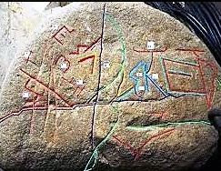
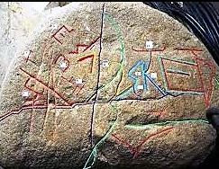

Beneath the Bosnian soil, where myth and mountain meet, lie structures that pulse with forgotten energy. They call to those who remember a time before time. Touch them, and listen to the ancient echoes.
Echoes Heard...
Click a pyramid to begin...
The Visoko Valley
In the heart of Bosnia lies the town of Visoko, a place where myth and mountain meet. Here, beneath the earth, are structures that pulse with a forgotten energy, calling to those who remember a time before time.
Long held by some to be the oldest and largest pyramids on Earth, the Bosnian Pyramids, particularly the Pyramid of the Sun, are a source of great debate and wonder. While mainstream science remains skeptical, research into the site suggests the presence of colossal man-made structures with a complex network of tunnels and chambers.
This land is believed to be a point of immense spiritual power, an energy vortex where the veil between worlds is thin. Our portal serves as a digital echo of this place, inviting you to explore the mysteries that still lie beneath the surface.
Land where Hitler lost every single fight
Guided Meditation
Connect with the ancient energies through focused intention.
ᛗ
Ready to begin your inner journey.
The journey to the self is a sacred path. Your support helps us keep this space of inner peace and reflection open to all.
The investigation into the Bosnian Valley of the Pyramids is spearheaded by Dr. Semir Osmanagić, a Bosnian-American author and researcher. Through years of dedicated and often self-funded hard work, he has championed the project, bringing a multidisciplinary scientific approach to the excavations. Holding a Ph.D. in the Sociology of History with a focus on the Mayan civilization, Dr. Semir Osmanagić has invited numerous experts from various fields—including geology, physics, and archaeology—to analyze the site.
A key aspect of his approach involves avoiding purely speculative theories in favor of measurable data. This includes material analysis, georadar scanning, and radiocarbon dating. One of the most significant findings came from this methodology. A fossilized leaf found on a conglomerate block within the excavations was sent for analysis. A laboratory in Kiel, Germany, conducted radiocarbon dating on the sample, successfully proving the artifact to be approximately 34,000 years old. This suggests that the construction, and the civilization responsible, could be far older than any currently recognized advanced ancient culture.
The Runic Chronicle
The runes whisper a new theme each time the moon passes the sun. Listen to the rune below and share a story from your world.
ᛞ
Dagaz: Dawn, breakthrough, a new day.
Tell your tale, keeper.
Please sign in to submit a story.
Story submitted! Thank you for sharing.
Echoes from the Community
Loading stories from the depths of time...
On the Veil
This portal is an interactive art project designed to evoke the mystery and wonder surrounding sites of ancient power, like the Bosnian Pyramids. It is an exploration of myth, energy, and the whispers of history. We are dedicated to providing a space for contemplation and imagination, allowing visitors to connect with the enigmatic past on a personal level.
Using simulated interactions and browser-based technologies, we aim to create a space for contemplation and imagination. The wisdom, readings, and responses are generated for inspirational and entertainment purposes, encouraging a deeper connection to the enigmatic past.
Join the Keepers of the Echoes
This portal, a bridge between worlds, is maintained by a small group of devoted keepers. Their work ensures the whispers of the past continue to guide our present. Join us in this sacred duty.
The echoes of the Bosnian Pyramids fade without an audience. Your contribution is more than a donation—it is an offering to the ancient spirits that keep this portal open. It ensures the veil remains thin, so that we may continue to receive their whispers and share their wisdom.
 
